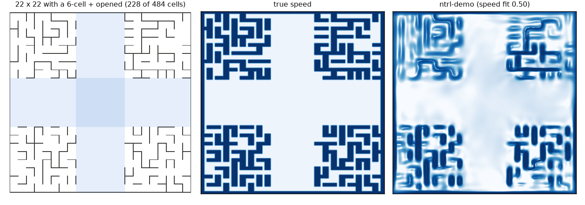
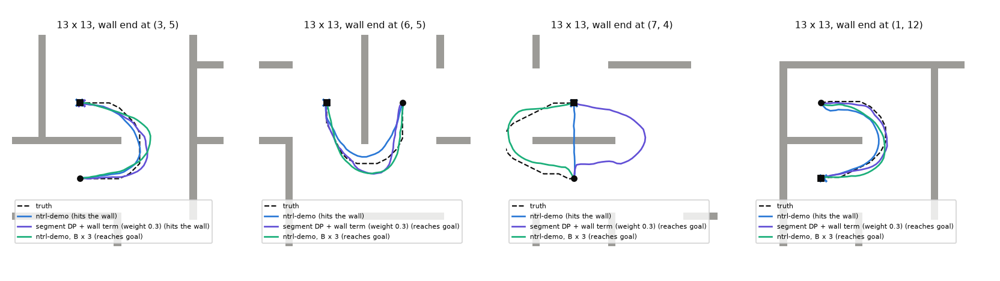

Maze Scale Test
ntrl-demo plans flawlessly on mazes up to the size of its own demo maze (7 × 7 cells) and degrades beyond it: 99.7 % of runs on 4×4 and 7×7, 88 % on 10×10, 59 % on 13×13 and 23 % on 22×22. It fails by hitting walls: as the maze grows, the walls fade out of its travel-time field. Two things help. A higher Fourier frequency for the input lifts it to 95, 90 and 43 % on the three large mazes. Segment DP with ntrl-demo’s own wall term in every level lifts 13×13 to 74 % and doubles 22×22 to 43 %. The two do not stack: the DP chain on a higher-frequency base plans worse than either.
Five mazes, one robot
Perfect mazes (randomized Kruskal) with 15 % of the remaining walls removed to open loops, like ntrl-demo’s demo maze, at 4, 7, 10, 13 and 22 cells a side. Each is an .obj normalized exactly as ntrl-demo’s to_off does. The robot is a 0.5 × 0.2-cell rectangle planned in SE(2) as q = (x, y, φ) with φ = 0.25 θ in cell units: it can turn on a corridor’s centre line but drives slowly broadside. Margin, planner step, tolerance and temperature are all set in cells, so only the number of cells changes between mazes.

Success by distance
Queries are binned by their true travel distance (cells at full speed, from a ground-truth grid solver), 40 per bin, each certified by a collision-free truth path. Each point pools 3 training seeds × 3 planning seeds; the whisker is the training-seed range. The oracle, the same MPPI driven by the true travel time, solves every query, so every loss is the learned field’s. Hover a panel for the numbers.
All numbers as tables
Why it breaks: the walls fade out
At 7×7 the learned speed redraws every wall. At 10×10 and 13×13 most walls survive, at 22×22 only a connected subset. On held-out pairs, the log-correlation between learned and true speed falls 0.96, 0.92, 0.81, 0.69 and 0.32 from 4 to 22 cells. At poses next to a wall, two measures fall too (training seed 87358, pairs 2–8 cells apart). The field’s rise into the wall, whose eikonal target is 1, goes 0.89, 0.86, 0.62, 0.48, 0.24. Its pull away from the wall, the cosine with the into-wall direction (target 1), goes 0.99, 0.98, 0.96, 0.92, 0.56. On 22×22 a failing run touches its first wall a median 0.4–3.5 cells after the start, depending on the distance bin.

Control: input frequency. Multiplying ntrl-demo’s Fourier matrix B by 3 (same random draw, nothing else changed) restores much of the wall field: speed fit 0.90, 0.84 and 0.52 on 10, 13 and 22 cells. Planning recovers to 95 % and 90 % on 10×10 and 13×13, but only 27 % on 22×22, where B × 6 reaches 43 %. So the input frequency per cell explains much of the loss, but not all of it. The section on higher Fourier frequencies has the full sweep.
Segment DP
Segment DP (the interval-DP transition of jeffrey/segment_dp) builds travel times for long gaps from shorter ones: T(i, j) = mink T(i, k) + T(k, j) over pool poses k within the shorter segments’ range. Gaps are cut geometrically from 0.5 cells (ntrl-demo’s own field below) to the maze diameter, 8 to 16 levels, each a warm-started ntrl-demo network fit to its DP targets. The chain fixes the long-range values (13×13, 16–32 cells: 1.35 × the true travel time vs 2.04) and directions, yet plans worse on every maze ntrl-demo had not already solved. The levels are fit to values only, so they lose the wall barrier that ntrl-demo’s near-wall terms give its own field (near-wall table below), and MPPI collides sooner.
Excluding through-wall base pieces from the DP (checked pieces) does not change this. Fitting ntrl-demo’s own wall-direction term in every DP level (segdp3.py) brings the barrier back (near-wall table above), and the chains stop hitting walls; what still fails stalls in a local minimum of the long-range field (crosses in the figure). The term’s weight matters. At weight 1 the long-range values drift low and long queries stall; at weight 0.3 the chain beats ntrl-demo on all three 13×13 training seeds (451 / 456 / 420 vs 347 / 320 / 393 of 600 runs), at every distance including the longest (16–32 cells: 32 / 51 / 29 vs 32 / 4 / 34 of 120), doubles it on 22×22 (308 vs 152 of 720). Where ntrl-demo is already good, the chain costs a little. On 10×10 it scores 80 vs 88 % (504 / 476 / 467 vs 500 / 523 / 560 of 600): it is perfect up to 4 cells but loses at 16–32 cells (32 vs 66 %). On 7×7 it scores 454 vs 480.

Fewer networks
Can the chain use O(log n) networks, each level doubling the gap? On 13×13, I kept the best variant (wall term at weight 0.3), the same ntrl-demo base network per training seed, the same first edge (0.5 cells) and the same per-level budget, and changed only the ratio between band edges. The largest gap is 15.5–15.7 cells, so r = 25/L gives exactly L levels: r = 2 (doubling, 5 levels, 6 networks), 1.641 (8 networks), 1.470 (10 networks), against the original 1.35 (13 networks).
Doubling does not work. With 6 networks the chain is back at ntrl-demo’s level (58 vs 59 %) and loses the long range almost entirely (16–32 cells: 1 % vs 31 % with 13 networks); 8 networks give 60 %, 10 give 69 %, 13 give 74 %. Short queries stay solved at every ratio. The cause is the lens the DP searches for split points: a pair is built from pieces both no longer than R (the range of the levels below), so for a gap g the split points lie in a lens of half-width R√(1 − (g/2R)2). At the top of a band (g = rR) that is 0.74 R at r = 1.35, 0.57 R at 1.64 and zero at r = 2: only points on the straight line remain, and a detour around a wall needs a split point off it. The targets then overestimate, and the error compounds level by level (truth probes, training seed 87358: the top level’s target is 1.42× the true travel time with 6 networks, 1.23× with 8, 1.17× with 10, 1.11× with 13). Doubling would need splits into three or more pieces per level, or pieces allowed to reach past the previous level.
More split candidates
Each DP target is a minimum over split points. With few candidates the minimum misses the best split and the target comes out too high; that error is then copied into every level above. On 13×13, with the wall term at weight 0.3, 13 networks and the same base network per training seed, I changed only the number of split candidates per pair: 32, the original 128, 512 (three training seeds each) and 2,048 (training seed 87358).
More candidates give more accurate targets, but planning gains only a little and stops at 512. The top level’s target over the true travel time falls steadily: 1.22, 1.12, 1.08, 1.04. Success goes 69, 74, 76 % for 32, 128 and 512 candidates. For training seed 87358 the runs solved are 440, 451, 465 and 453 of 600 for 32 through 2,048. The gain is in the long bins: at 16–32 cells it is 19, 31, 38 and 39 %. Computing the targets costs 6, 21 and 58 minutes per chain for 128, 512 and 2,048 candidates. Too few candidates are clearly harmful: 32 loses 5 points against 128, mostly beyond 8 cells. Past 512 the targets keep improving and planning does not. At 2,048 candidates, 143 of the 147 failed runs never reach the goal within the budget, the same stall pattern as the 128-candidate chain (139 of 149). Target accuracy is not what limits planning there.
Higher Fourier frequencies
ntrl-demo’s input layer is a random Fourier embedding sin/cos(B x), and its frequencies are tuned to the demo maze. I multiplied B by a scale s (1.5, 3, and 6 on the larger mazes) and changed nothing else: same random draw per seed, same data, losses, step and time units. Each scale has three training seeds, except s = 6 on 10×10 and 13×13, which has one.
Every maze has a best frequency, and it grows with the maze.
- 7×7: s = 1 is already perfect (99.8 %), and 1.5 changes nothing.
- 10×10: 88 % rises to 93 % at s = 1.5 and 95 % at 3.
- 13×13: 59 % rises to 76, 90 and 91 % at s = 1.5, 3 and 6. The 16–32-cell bin goes from 19 to 75–82 %.
- 22×22: 23 % stays at 24 and 27 % for s = 1.5 and 3, then reaches 43 % at 6, still rising.
Past the best scale, planning collapses: 7×7 at s = 3 drops to 78 % and 10×10 at s = 6 to 51 %, losing mostly the long bins. These failures are a different kind from the unscaled ones. Every failed run stalls short of the goal (89 of 89 and 296 of 296 for training seed 87358); unscaled ntrl-demo fails mostly by hitting walls. With too high a frequency for the maze, the field grows local minima that MPPI cannot leave.
The speed fit is no guide here. It rises with s on every maze, including where planning collapses (0.96 on 7×7 at s = 3), because it measures how well the walls are drawn, not whether the field descends to the goal.
Segment DP on a scaled embedding
If a higher Fourier frequency helps ntrl-demo, the segment-DP chain should benefit from starting on the scaled network too. I built the weight-0.3 chain on the B × 3 base on 13×13 and the B × 6 base on 22×22, three training seeds each. Every level is warm-started from the level below, so all levels keep the scaled B; edges, wall term and budget are those of the unscaled chain.
It plans worse than either parent.
- 13×13: 66 % (394 / 378 / 416 of 600), against 74 % for the chain on the plain base and 90 % for ntrl-demo B × 3.
- 22×22: 37 % (263 / 256 / 282 of 720), against 43 % for both the plain chain (one seed) and ntrl-demo B × 6. The scaled chain wins below 4 cells (98 and 82 %) and loses everything beyond 8 cells (6, 1 and 0 %).
The values are better, not worse. On 13×13 the top level’s DP target is 1.07× the true travel time against 1.11–1.14 for the plain chain, and the learned field’s median T/T* is 1.07 against 1.12–1.16. Near walls the scaled chain rises more steeply (0.87–0.93 vs 0.75–0.82 of the eikonal target), and it points away from the wall just as well (cosine 0.98–0.99).
What breaks is the shape of the field along the way. The chains fail by stalling, not by hitting walls. A stalled run jitters by about 0.01 cells per 100 steps where the field’s gradient is near zero, 5–7 cells from the goal on 13×13 and 9–12 on 22×22. I counted the local minima of T(x, goal) along each true path of 8 cells or more. A correct field has none, since T falls all the way to the goal.
- 13×13: ntrl-demo has 0–0.1 per path at either scale, the plain chain 3.4–4.7, the scaled chain 5.6–7.6.
- 22×22: 0.3–1.9, 6.7 and 11–13.
The minima are not concentrated where one level hands over to the next: about 33 % of them lie in blend zones, which cover 32 % of the path length. They are ripples inside each level.
The mechanism is the loss. Each DP level is fit to target values only, |log T − log y| at sampled pairs; nothing constrains its gradient between the samples. A higher-frequency embedding lets the network fit the targets with less smoothing between them, so the error shows up as short ripples, and each ripple is a local minimum MPPI can stop in. ntrl-demo’s eikonal loss constrains |∇T| everywhere it samples, which keeps its field monotone along paths at B × 3 and × 6. Even that constraint has a limit: past the best frequency for a maze, ntrl-demo stalls too (Fourier section above). The chain reaches that regime at a lower scale.
Opening a + in the 22 × 22 maze
Does ntrl-demo fail on 22×22 because of the maze’s size or because of how many walls it has to hold? I opened a centred + of width 6 cells running the full length of the maze in both directions. Every interior wall between two + cells is removed (168 of 458), so the + covers 228 of the 484 cells (47 %). The walls on its outline and the rest of the maze are unchanged. Box, robot, data recipe and training are the same as for 22×22, with three training seeds. The queries are new (40 per distance bin, certified on the plus maze), and the oracle again solves all of them.
ntrl-demo solves 67 % of runs (468 / 479 / 490 of 720) against 23 % on the original maze. The gain holds in every bin up to 32 cells, for example 89 vs 16 % at 4–8 cells. Its speed fit rises from 0.32 to 0.53. The two query sets differ, so it matters where the queries lie:
- Both ends inside the +: 99 % solved, at every distance up to 32 cells. That is the open area plus the walls on its outline, which the field draws like a small maze.
- One end inside: 45 %. Against the same region of the original maze it does better: 51 vs 24 % at 8–16 cells, 36 vs 7 % at 16–32.
- Neither end inside: 18 %. Most of these are 32–64-cell queries that go around the +, which nothing solves (0 %).
Driving straight at the goal also does far better here, 49 vs 13 %, because the + makes many queries open. The gain over the straight line stays large, though: 15–34 points in every bin from 2 to 32 cells, against 5–22 points on the original maze.
So the problem is how many walls the field must hold, not the maze’s extent. With 290 walls left (between 13×13’s 177 and 22×22’s 458), the same network on the same box draws the remaining walls better. The open part costs it almost nothing.

U-turns around a wall end
The distance bins mix two effects: long queries pass many walls, and the field must also be right near each one. To separate them, I used the shortest hard query: a U-turn around the free end of a wall. Start and goal are the centres of the two cells on either side of a wall’s last segment, so they are 1 cell apart with the wall between them. Headings are random. The true path goes around the end, a median 2.2–2.3 cells on every maze, and driving straight solves none. There are 40 such queries per maze, at different wall ends, with the same three planning seeds per training seed.
The same 2-cell manoeuvre gets harder as the maze grows. ntrl-demo solves 100, 99, 83, 30 and 3 % on the 4, 7, 10, 13 and 22-cell mazes, although the geometry around the wall end is identical in cells. The failed runs mostly do reach the goal, but by cutting through the wall end. For training seed 87358 on 22×22, 111 of 120 runs arrive and 116 touch the wall. The field no longer draws a single wall end sharply enough for MPPI to steer around it. So the loss at long range is not only about distance; every wall is drawn worse.
The frequency of the embedding is what fixes it.
- ntrl-demo with B × 3: 96 % on 10×10 and 81 % on 13×13. With B × 6, 91 % on 13×13 (one seed) but only 26 % on 22×22.
- Segment DP: without the wall term it is worst (52, 11 and 0 % on 10, 13 and 22). With the wall term at weight 0.3 it matches ntrl-demo B × 3 (97, 79 and 29 %).
- Segment DP on the scaled base is best on both large mazes: 89 % on 13×13 (B × 3) and 73 % on 22×22 (B × 6), against 26 % for the B × 6 network alone.
A u-turn is served by the chain’s lowest levels, where the scaled chain is strong (98 % of 0.5–2-cell queries on 22×22). Its losses are in the long-range levels (previous section).
Among the 13×13 chain variants, more split candidates or fewer levels change u-turn success by only a few points (69–83 %), so the long-range DP does not help or hurt a short manoeuvre.

How it was measured
- Training: ntrl-demo’s point recipe in the robot’s C-space (500,000 pairs; applied in the unit cube the C-space box maps to, since the heading axis is thin) and its
models/metricModel.train()unchanged, dim 3, 5,000 epochs, training seeds 87358 / 1 / 2. - Speed: clip(d / margin, 0.1, 1) with margin 0.175 cells (ntrl-demo’s test-maze ratio), stretched by the trainer; d is the exact rectangle-to-wall clearance (matches shapely to 4·10−6 cells).
- Planner: ntrl-demo’s MPPI (50 samples, horizon 5, cost 10 T(first) + T(last)), its defaults on the 4×4 maze and scaled per cell elsewhere; budget 3× the true path. Success = reached the goal without touching a wall (exact clearance every 0.005 cells).
- Truth: travel time on a C-space grid (1/15 cell, 13 headings; within 1 % of a 4× finer grid), 48 goals per maze; queries from 200,000 random starts, binned by true travel distance, 40 per bin.
- Segment DP: 100,000 pool pairs per level, 128 split candidates (half near the straight line, half uniform in the lens), |log T − log y| loss, 6,000 steps of 2,000.
Caveats
- One maze layout per size; 40 queries per distance bin.
- ntrl-demo has three training seeds on every maze. Segment DP with the wall term at weight 0.3 has three on 10×10 and 13×13 and one on 7×7 and 22×22. The 13×13 variants have three seeds unless their table says otherwise; every other DP number is training seed 87358 only. ntrl-demo’s 13×13 seeds differ by up to 73 of 600 runs, mostly in the long bins.
- The wall-term weight was tried at 1 and 0.3 only, chosen on 13×13 and carried to the other mazes.
- Only ntrl-demo’s MPPI was used as the planner; a gradient-descent planner was not tried.
Registered runs
Travel-time explorer
Pick a pose in a maze: click a cell on the map (or focus the map and use the arrow keys), and choose the robot’s heading. The charts show the travel time from that pose to every grid point on the same line: along x (the cell’s row), along y (its column) and along the heading axis at the same spot. The black line is the true travel time from the grid solver; the coloured lines are the learned fields (training seed 87358). Times are in cells at full speed (the time to drive that many cells with nothing slowing the robot). Drag across a chart to zoom into that stretch (or use + and −); double-click it or press Reset to zoom back out. Each chart is scaled to the poses the robot can occupy, so peaks inside a wall may run off the top; hover to read them. Shaded bands mark where the robot, held at the picked heading, is slowed by a wall: the darker the band, the slower it moves there, and the darkest means it is touching the wall.